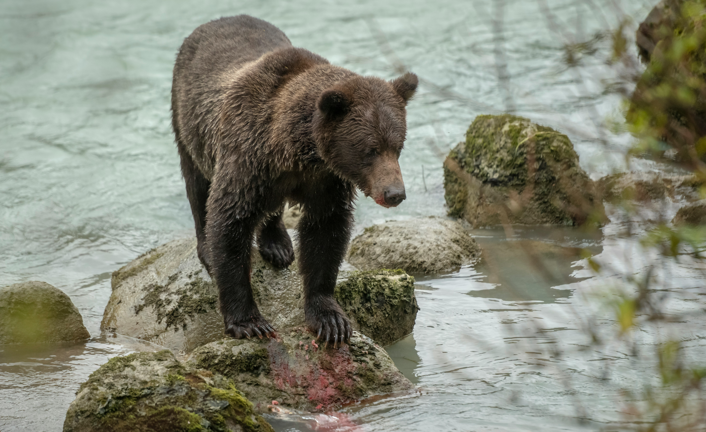

Salmon Keystone Species
Salmon are a keystone species. Their role in ecosystems is crucial in maintaining balance.
-
Important food source for various species.
- Source of food for apex predators such as bears, wolves, eagles, and orcas.
- Salmon can be 33-94% of a bear's annual protein.
- Birds rely on salmon carcasses for winter survival and migration.
- They provide nutrients for larger fish and marine mammals.
-
Salmon carcasses fertilize surrounding wetlands and forested areas with the ocean nutrients brought back with them: nitrogen, phosphurus, and carbon.
- Trees along salmon-bearing waterways receive up to 70 percent of their nitrogen from salmon, increasing their growth rate three times the average.
- Bears, wolves, and eagles carry salmon into the forests distributing nutrients further throughout the land.
Research shows that at least 138 wildlife species interact with salmon at various life stages, including 23 species feeding on eggs, 49 on juveniles, 63 on marine-phase salmon, 16 on spawning adults, and 83 species feeding on their carcasses.
